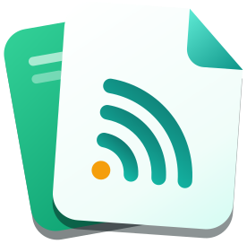

Your devices,
in sync.
Discover nearby compatible devices and choose the one you want to connect to.

WiFilesExplore the appA calmer way to send and receive files between Android, Mac, and Windows devices on your local network.
WiFiles is designed to make moving files between your everyday devices feel clear and considered—from the first connection to the final confirmation.
Meet WiFilesDiscover nearby compatible devices and choose the one you want to connect to.
Review the files and destination before you confirm a transfer.
Follow progress, revisit transfer history, and manage trusted devices.
WiFiles is designed for the mix of devices you already use. The connection flow adapts to each platform.
See every screen ↗Explore the full collection of 46 WiFiles app screens, from first launch to transfer history and help.